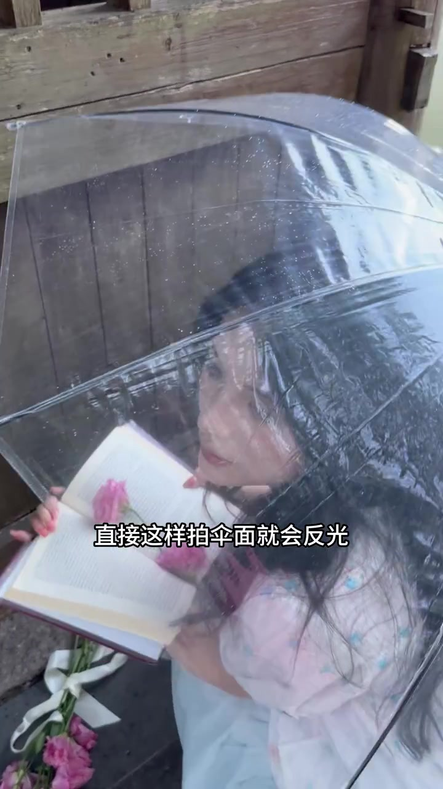
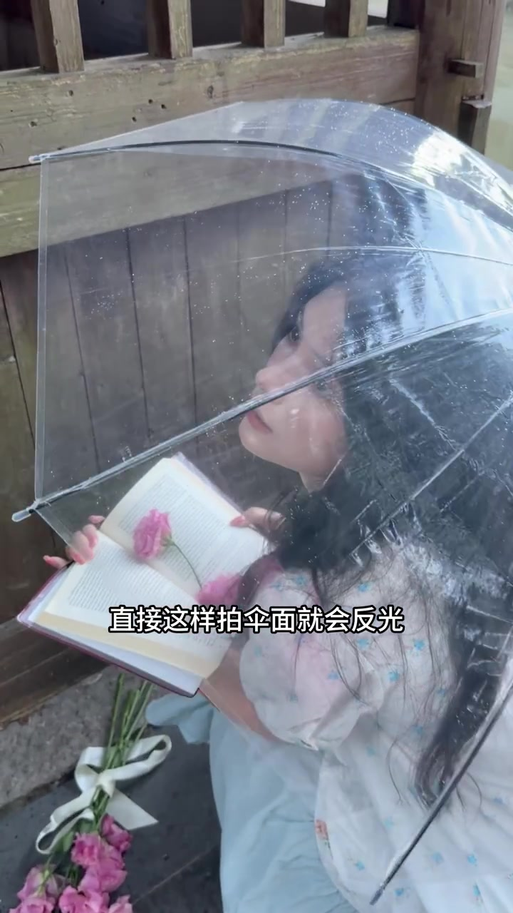
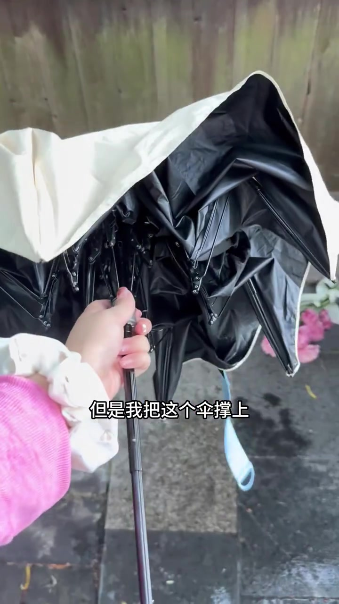
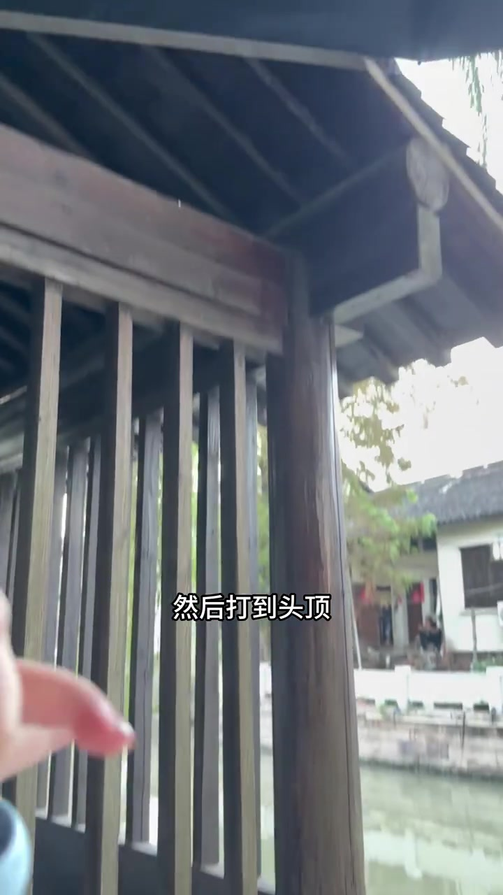
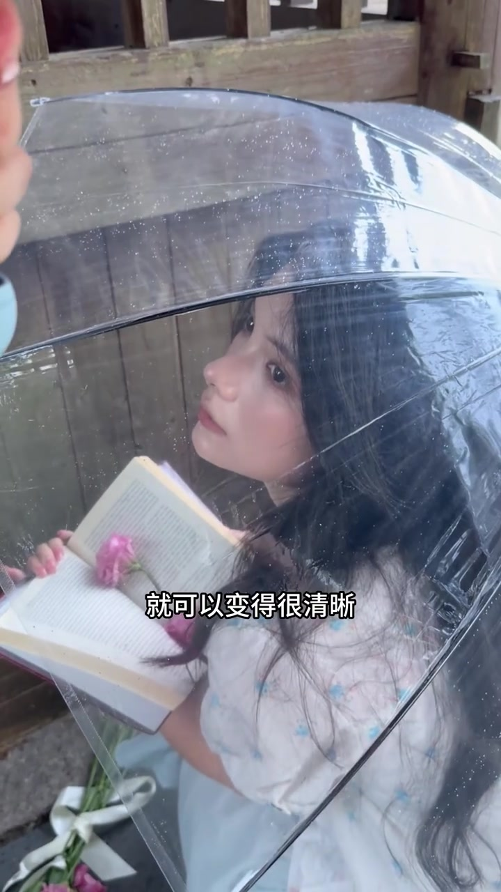
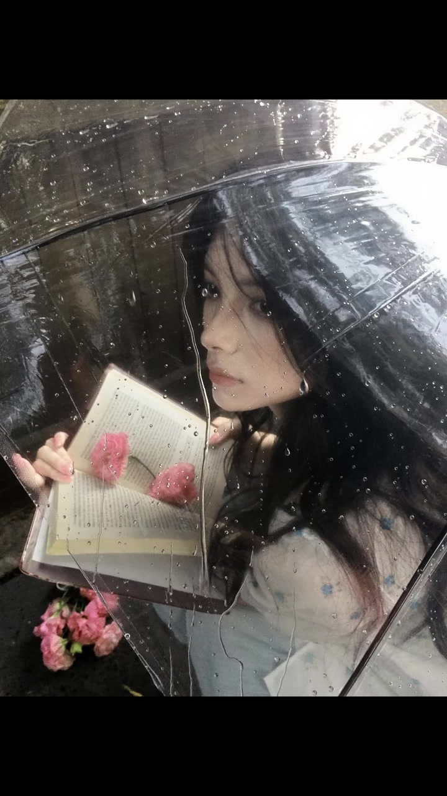

问题：直接这样拍，伞面就会反光
开场是雨天氛围人像：透明伞布满水珠，模特蹲在木构旁，手里捧着夹了粉花的书。俯拍穿过伞面时，字幕直接点出痛点——伞面反光，脸看不清。
「直接这样拍伞面就会反光看不清脸」
说明：Whisper 把「伞面」识成「散面」、「伞撑上」识成「散冲上」。叙述按画面字幕与语境校正；文末转录区仍完整保留原始分段。


动作：当场把伞往上撑
拍完样张后作者立刻录教程，一镜到底。镜头切到第一人称：粉袖手抓住伞柄，把伞从挡脸的位置往上撑开，画面字幕写「但是我把这个伞撑上」。
「但是我把这个伞撑上」
不是换灯、也不是后期去反光，而是现场改伞的倾角与高度，给脸部留出受光空间。


结果：光打到头顶，脸变得很清晰
伞上移后，雨滴仍在透明伞上保留氛围，但脸部不再被伞面高光盖住。作者收尾说：光打到头顶，脸就变得很清晰。
「然后打到头顶就变得很清晰」
对比开场：同样是透明伞、书与粉花道具，差别主要来自伞面角度——让光先到头顶，再落到脸，而不是先打在伞膜上反光回镜头。


文案补充（非口播）：作者称拍完才想起录教程，手机为 5s，教程参考 @六珂丶；作者显示名缺失，索引以 uploader_id 标注。